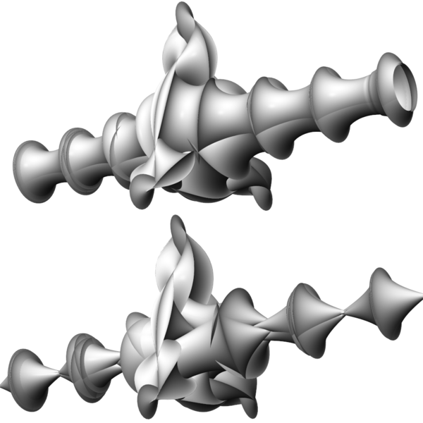
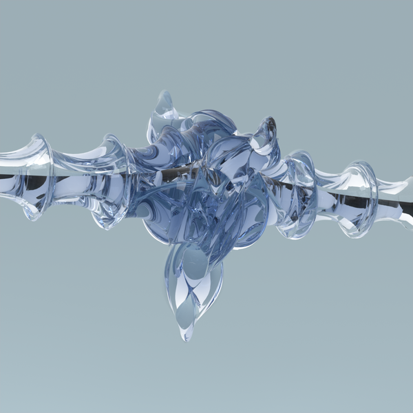

GeometrieWerkstatt Gallery
Pseudospherical
Minding Surfaces
Breathers
Minding Breathers
Minding Breathers
Pseudospherical cylinders in euclidean 3-space
Solitons on Minding surfaces.

3-fold Minding breathers based on a tubular and a conical Minding surfaces.
Minding Breather

Minding Breather
A two-lobed breather moves along a Minding surface.
Double breather